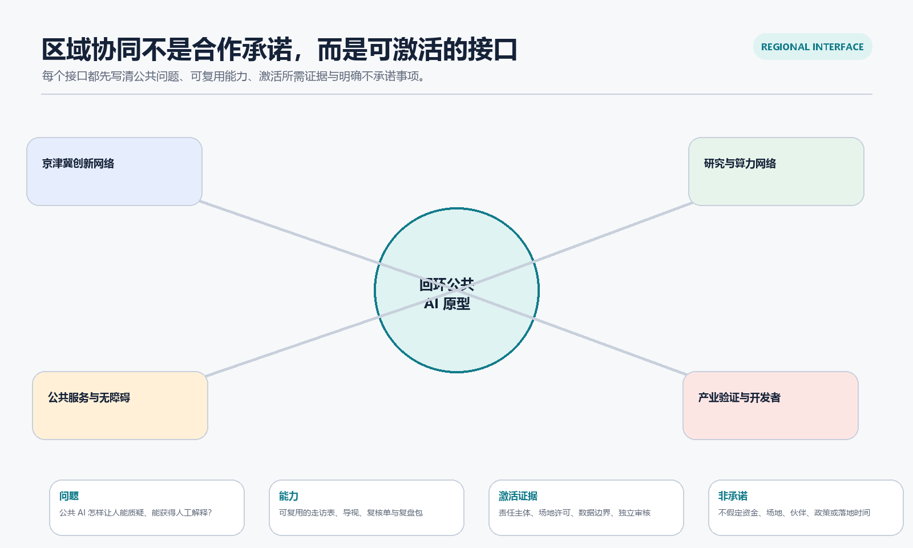

重点区域
重点区域三个重点区的公共接口、人工责任与硬停止条件。
一个面向百年京张 AI 创新带的概念性公共服务原型：让人能看懂、提问、拒绝、获得人工解释，并看见问题如何被处理。
临时空间锚点，不是官方红线或工程图。 重点区域
重点区域三个重点区的公共接口、人工责任与硬停止条件。
 用地分区、建筑与更新项目
用地分区、建筑与更新项目概念结构与可替换关系，不含法定分区或建设结论。
 交通慢行与蓝绿公共空间
交通慢行与蓝绿公共空间从断点观察到公开回访的服务流程。
 核心指标、任务覆盖与自检状态
核心指标、任务覆盖与自检状态指标复算、暂停链与需由本地检查确认的状态。

AI 场景、来源与假设场景接口、区域协同和公开资料边界。
[source:USER-GPT-IMAGE-2-CONCEPT-RENDERS]
 资料与记忆入口
资料与记忆入口读懂资料边界、选择参与或拒绝的公共入口。
 提问与共创中庭
提问与共创中庭纸质反馈、协同排序和非数字参与的公共中庭。
 人工复核服务街角
人工复核服务街角人工解释、申诉和线下服务并存的开放街角。
 慢行与无障碍断点诊断
慢行与无障碍断点诊断观察、说明、纸质反馈和可逆调整的慢行试点。

[source:OFFICIAL-ANNOUNCEMENT] [source:AGENT-TASKBOOK] [source:POLICY-GENAI-INTERIM] [source:POLICY-BARRIER-FREE]
政策依据用于服务边界、投诉处理与人工服务的有限语境；并不构成具体场地合规结论。
官方边界、地块/权属、道路红线、文保、市政、消防、交通、场地许可、独立成本与合作协议。
概念总览图与临时空间锚点。
区域叙事、三处原型与试点范围；不构成官方边界。
众智园、AI 原点与大钟寺的三个公共服务接口。
仅为概念图层，不含法定用地分区结论。
步行与无障碍断点诊断，不提出道路工程结论。
面向停留、可达与可解释的公共体验。
不主张建筑指标、工程量或场地许可。
记录可验证公共问题，不构成更新项目立项。
带人工复核、申诉与退出条件的步行/无障碍试点。
数值、单位、公式与限制均写入 metrics.json。
问题、空间、运营与恢复责任形成同一交付链。
由本地四道检查更新 self_check.json。
可追溯资料索引和用途边界写入 sources.json。
公开资料限制与待补材料写入 assumptions.json。